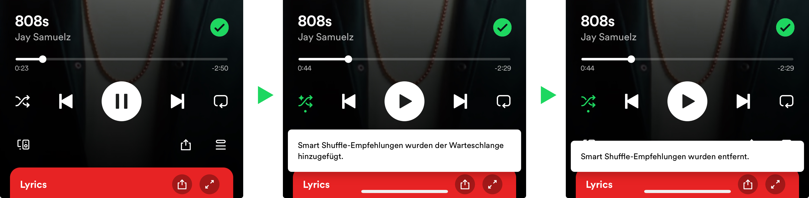

Heute ist mir auf einer längeren Autofahrt etwas sehr Interessantes aufgefallen. Ich fuhr ganz entspannt von Lübeck nach Kiel und hatte auf Spotify die Playlist „Lieblingssongs“ laufen. Soweit, so unspektakulär. Das Spannende an dieser Playlist (und an selbst zusammengestellten) ist jedoch, dass man über den Button „Zufällige Reihenfolge“ nicht nur die Titel zufällig anhören kann, sondern dass Spotify auch die „Smart Shuffle“-Funktion anbietet. Diese Funktion ermöglicht es, dass Empfehlungen von Songs zu favorisierten Interpreten angezeigt werden. Ein Beispiel hierfür ist, wenn zuvor ein Lied von Metallica in der jeweiligen Playlist gespeichert wurde, ist die Wahrscheinlichkeit hoch, dass demnächst ein Heavy-Metal-Song folgt. In diesem Video wird die Funktion noch einmal im Detail erklärt.
Vor knapp einem Jahr wurde diese Funktion eingeführt und in den vergangenen Monaten habe ich tatsächlich einige ganz interessante Interpreten kennenlernen dürfen. Zuvor wurde die Funktion in der folgenden Reihenfolge eingeführt: neutraler Modus (ohne zufällige Wiedergabe), zufällige Wiedergabe und schließlich Smart Shuffle. Für einen Einführungsprozess einer solchen Funktion ist dies durchaus natürlich, damit die Nutzer auf diese Weise langsam an Smart Shuffle herangeführt werden und nicht kognitiv überfordert sind. Natürlich könnten für diese Art der Einführung noch weitere Gründe bestehen, auf die jedoch an dieser Stelle nicht näher eingegangen werden muss. Ganz interessant ist jedoch, wie Spotify mit dieser Funktion weitergemacht hat. Der Teufel liegt bekanntlich im Detail. Erst kürzlich hat Spotify die Reihenfolge zur Aktivierung dieser Funktionalität leicht abgeändert, sodass nun an erster Stelle die „Smart Shuffle“-Funktion erscheint.
Abbildung 1: Aktuelle Reihenfolge der Zufallswiedergabe in Spotify

Spotify bestätigt auch selbst auf ihrer Website diese Aktualisierung mit den folgenden Worten: Update as of May 6, 2024: Smart Shuffle is now be the default play mode on mobile devices for Free users in Canada.
Für die meisten Personen ist dies nur eine marginale Veränderung, allerdings war diese Veränderung aus mehreren Punkten ein ziemlich cleverer Schachzug seitens Spotify:
-
Insbesondere neigen Menschen dazu, Optionen zu wählen, die weniger kognitive Anstrengungen erfordern. Ein klassisches Beispiel dafür ist die Anmeldung bei einer App: Statt ein langes Formular auszufüllen, bevorzugen Nutzer die einfache Option, sich mit einem bestehenden Konto wie Google oder Facebook anzumelden. Indem Spotify die Aktivierung der Smart Shuffle-Funktion auf einen einzigen Klick reduziert, macht es diese Option attraktiver und gebrauchstauglicher. Obwohl es sich nur um einen Klick weniger handelt, reicht dies oft aus, um die Nutzer dazu zu bringen, diese Funktion häufiger aktiviert zu lassen. Diese kleine Änderung in der Benutzeroberfläche senkt die kognitive Hürde und erhöht die Wahrscheinlichkeit der Nutzung erheblich.
-
Der Status-Quo-Effekt spielt ebenfalls eine wesentliche Rolle bei der Änderung der Aktivierungsmethode. Menschen neigen dazu, sich für die Standardeinstellung zu entscheiden, weil diese den geringsten Aufwand erfordert. Indem Spotify die Smart Shuffle-Funktion auf einen einfachen Klick umstellt und damit zur Standardeinstellung macht (zuvor war es ja die einfache Zufallswiedergabe), erhöht es die Wahrscheinlichkeit, dass Nutzer diese Funktion verwenden.
-
Mit der häufigeren Nutzung von Smart Shuffle kann Spotify wertvolle Daten über die Musikpräferenzen der Nutzer sammeln, was wiederum die Qualität der personalisierten Empfehlungen verbessert. In der heutigen datengetriebenen Welt bedeutet „mehr Daten“ jedoch auch „mehr wirtschaftlicher Wert“. Je detaillierter die Nutzerdaten, desto präziser können Marketingstrategien und gezielte Werbeanzeigen gestaltet werden. Dies führt nicht nur zu einer verbesserten User Experience, sondern steigert auch die Einnahmen durch effektivere Werbeplatzierungen und gezielte Marketingmaßnahmen.
Ich finde es spannend, wie minimale Änderungen auf solchen Plattformen, solch einen Impact haben kann. Natürlich weiß ich nicht im Detail, welche Gedanken Spotify bei der Änderung dieser Reihenfolge hatte. Allerdings dachte ich mir, dass es ziemlich interessant sein könnte, welcher unscheinbare Impact hinter solch einer Änderung stecken kann.